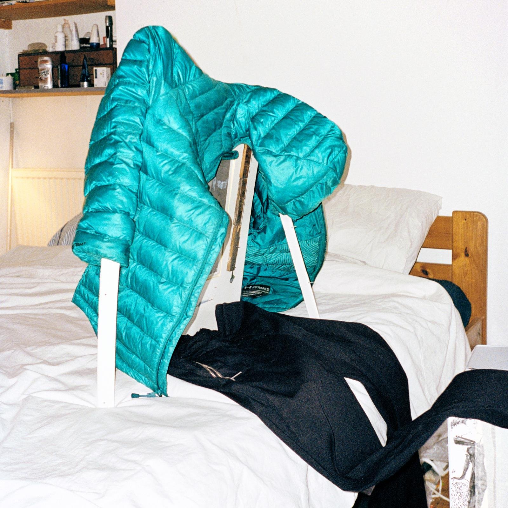
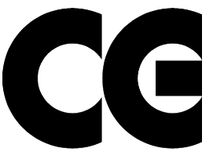
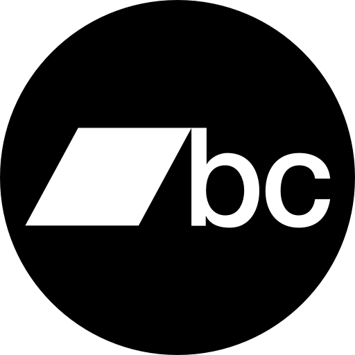

Euro TV is an ongoing instrumental collaboration begun in 2021 by artists Nicholas Cheveldave and Will Sheridan Jr.. Blending piano, trumpet, and other instruments with recordings of night buses, drifting voices, and the hum of empty streets, the album pieces together a rhythm of ‘interpersonal sound’—an echo of lives half-remembered yet undeniably present.
Track Listing
Side A: (13 minutes 25 seconds)
Side B: (14 minutes 20 seconds)
Vinyl CG01 - 2025

Get it hereStreaming & Download

Get it here